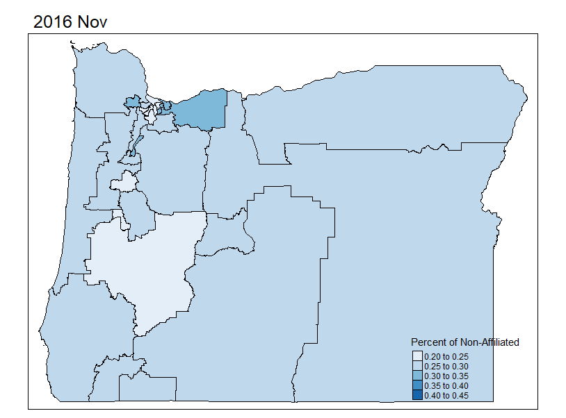

Who is Oregon’s fastest growing political group?
There is a strong feeling in many parts of Oregon that Democrats are slowly taking over the state’s politics. Oregon’s voter registration tells a very different story. Since 2016, Oregon has seen a rapid growth of a political group, unlike any other state in the U.S. The group is non-affiliated voters (NAVs). A non-affiliated voter is registered to vote but has not registered with any of the two major parties or any of the smaller third parties. What makes them unique in Oregon is their size. In under 5 years, NAV have grown by over 40% becoming the second largest registration group in Oregon.
The driver of the growth among NAVs is the implementation of the Motor Voter Act in 2016. When this law was passed in 2015, it was a landmark piece of legislation and the first of its kind in the United States. This law, also known as automatic voter registration or the “Oregon model,” registers an eligible voter if they interact with the DMV. Through the Motor Voter Act, Oregon’s voter registration system became an opt-out instead of an opt-in system. 21 other states have since followed Oregon’s lead and passed similar legislation.1
In Oregon, after a voter is registered, they are sent a postcard with three options—they can send the card back registering with the Democratic Party, the Republican Party, or they can opt out. In choosing not to respond, they become a NAV. Since the passage of this legislation, thousands of voters have not taken the step of signing up with any party and, remained a NAV.

Oregon is one of 12 states that have closed primaries, preventing NAVs from participating in primary elections. Closed primaries only allow registered members of the political party to vote for the candidates during the primary, as opposed to open primaries, in which all registered voters select their top choice, and the top two candidates move on to the general election. In the 2020 election, of the 16 Oregon State Senate races, only four were within five points, while another four of the races were completely uncontested. For at least 10 of the races in 2020, the seat was entirely decided by the primary election. As most of Oregon’s legislative races, specifically State Senate races, are uncontested or non-competitive, the primary elections play a key role in deciding who will represent a district.
How will NAV registration look in 2022?
To begin to investigate what is driving NAV growth and the political effect it will have on the state, five distinct Senate districts in this study highlight the diversity of Oregon politics and its many facets, shedding light on what NAVs look like in Oregon.
The 23rd State Senate District
The first district I looked at was the 23rd Senate district. I classify it as the most urban district in the state. Of the 30 Senate districts in Oregon, the 23rd is by far the smallest at only 19 square miles. It is in the most densely populated part of the state in northeast Portland. As Portland is the most racially diverse city in the state, it is also among the more diverse districts. According to the 2018 American Community Survey, only 77% of the district identified as white. For comparison, the most racially diverse Senate district in Oregon is 70% white.
As one might expect, this district has not had an actual contested general election since 2003 when the districts were moved around the state. Since then, any Democrat that has held the seat easily won the election with at least 80% of the vote. This district saw one of the smallest growths in NAVs at only 26%. With forecasting, NAVs are expected to make up roughly 28.6% of the district on election day in 2022, making it the lowest of the five districts that were forecasted.
The 30th State Senate District
In direct contrast to the 23rd district, the 30th State Senate district is the largest and most rural district in Oregon. The district alone consists of over a third of the state’s area but contains only three percent of the state’s population. Unexpectedly, the district is average in terms of its diversity, with about 87% of the district being white. The political slant of the district though? It fulfills all expectations of being a conservative hotspot in the state.
Like the 23rd district, it does not have a history of close general elections with the last 20 years being largely uncontested elections for Republicans. What makes this district interesting is its huge growth of NAVs since 2016. They have grown by 47% which is among the highest in the state. This trend is expected to continue with 35.7% of registered voters expected to be NAVs in November 2022. This proportion is the highest of the five districts forecasted.
The 7th and 8th State Senate Districts
These two districts represent another side of Oregon politics. These two districts are the most representative districts in Oregon. By representative, this means that they are the most like the median in terms of racial demographics and their urban classification. The 7th district is in Linn and Benton counties, covering both Albany and most of Corvallis, along with the rural areas in between both cities. The 8th is mostly in Lane County and represents most of Eugene and its surrounding areas to the west.
Both districts portray how most elections go in Oregon. There is usually a Republican and a Democrat that runs, but the election ends with a Democrat usually winning by double digits. In terms of NAV growth, the 7th district is average with 40% growth. The 8th district on the other hand experienced much lower growth at only 26%. However, the proportion of NAVs on election day 2022 is expected to be almost that same at roughly 32% each.
The 10th State Senate District
The 10th Senate district exemplifies a rarity in Oregon, as it is competitive. In the last two elections, the margin of victory was under 10 points. This is largely due to the even distribution of the voters. Democrats, Republicans, and NAVs each make up roughly a third of voters with Republicans being the smallest among the three. The district covers large parts of Salem, specifically, the relatively affluent areas of South and West Salem. It also covers more rural areas such as Independence. In terms of how it compares to the rest of the state it is more urban than most districts and is average in terms of racial demographics. NAVs have experienced similar growth to the 30th district with 46% growth over that last five years. Currently, NAVs represent 32% of the district and it is expected that they will grow to 33% by the midterms.
Who is driving NAV growth?
The biggest takeaway for Oregon is that NAV growth is fastest in rural parts of the state. The 23rd and the 30th districts exemplify this trend, but it is also born out in statewide models. Whether a district is urban, rural, or mixed has a strong correlation with the growth of NAVs. Even when a districts racial diversity is included in the model, its rural score has a much higher significance.
While a district that is rural is more likely to have experienced a more rapid growth of NAVs, rural districts are also much more likely to be Republican majority districts. When percent of Republicans in district was considered, it was the most highly correlated feature with the growth of NAVs. However, both these are simple correlations and there is the potential that high correlations is due to multicollinearity.
What these two correlations point to is that growth of nonaffiliated voters is caused by apathetic voters. As Oregon has long been controlled by the Democratic Party, voters in rural areas are more likely to believe their vote does not matter or cannot instigate change, another finding in my research was that NAVs were more likely to be under the age of 49. What this points to is that the average NAV is likely a younger voter who lives in more rural parts of the state.
What is causing this growth needs further investigation.

Profiling NAVs could be its own entire blogpost, while this study emphasizes the role of NAVs in select Senate districts, to see more on this, checkout my post on investigating NAV growth.
What can be done to increase NAV participation in elections?
With Oregon State Senate and House elections being largely uncontested or non-competitive elections, the biggest potential to increase participation and allow these voters to influence the state’s election is to change our primary process.
Under our current two party closed primary system, in any given district in Oregon, over a third of voters are shut out of the process of picking the candidate that will likely win the general election. In the 2020 election, in most Oregon counties, less than 20% NAVs voted in the primary. In comparison, these same voters turned out above 60% for the general election. In an open primary system, NAVs and third-party registrants would have the ability to vote for their top candidate from any party and political participation would not be limited by party labels. This would allow the second largest political group in Oregon to influence who the eventual candidates will be for the general election, and to incentivize them to be more involved.
Opening primaries would not be without precedent; a bill was introduced in the 2017 Legislative session to do just that. Currently, a political group is working to get a ballot initiative included on the 2022 ballot to open all primaries.2 Open primaries have also been correlated with candidates that are more moderate.3 Candidates that have to appeal to a broad electorate engage with multiple viewpoints and could combat some of the cynical or apathetic feelings voters’ have towards the political process.
If Oregon wants to continue to be a state that leads the nation on increasing political participation, as with the Motor Voter Act, opening the primaries would be large step in the right direction.
Further Readings:
If you are interested in my research, be sure to check out my other two blog posts that cover the more technical process of forcasting and investigating NAV growth.